Mazda 6 kombi z niezawodnym i dynamicznym silnikiem benzynowym 2.5 192KM, automat, auto z 2016 roku. Kupione przeze mnie od firmy 5 lat temu, zadbane, serwisowane w ASO jak i u prywatnych mechaników. W marcu tego roku wykonano przegląd auta wraz z wymianą oleju silnika filtrów, tarcz i klocków (tył pojazdu) nabita i odgrzybiona klimatyzacja. W roku 2025 oprócz bieżącej wymiany oleju i filtrów wymieniono wahacze. Również w roku 2025 usuwane były skutki gradobicia metodą bezinwazyjną wyciągania wgnieceń bez lakierowania. W roku 2024 w serwisie ASO wymieniono olej w automatycznej skrzyni biegów. Samochód dodatkowo posiada zamontowany carplay/android auto. Do auta dokładam dodatkowo bagażnik dachowy który jest na zdjęciach jak i komplet letnich kół również na zdjęciach. Auto miało delikatną szkodę parkingową przez poprzedniego właściciela lewy tył pojazdu. Samochód jest w bardzo dobrym stanie technicznym i wizualnym. Samochód posiada aktualne badanie techniczne oraz ważne ubezpieczenie OC.
Auto do obejrzenia w Krakowie (dzielnica Prądnik Biały) Więcej informacji udzielę telefonicznie
Bogata wersja wyposażeniowa, samochód posiada m.in:
* skórzana tapicerka
* elektrycznie regulowane fotele
* podgrzewane fotele przód/tył
* kamera cofania
* czujniki parkowania
* czujniki martwego pola
* nawigacja
* system multimedialny
* nagłośnienie BOSE
* adaptacyjny tempomat
* klimatyzacja automatyczna dwustrefowa
* bezkluczykowy dostęp (keyless)
* pestka antykradzieżowa
* reflektory LED matrix
* alufelgi 2 komplety
* head up
* hamowanie po wykryciu przeszkody
* korygowanie toru jazdy
* lusterko fotochromatyczne
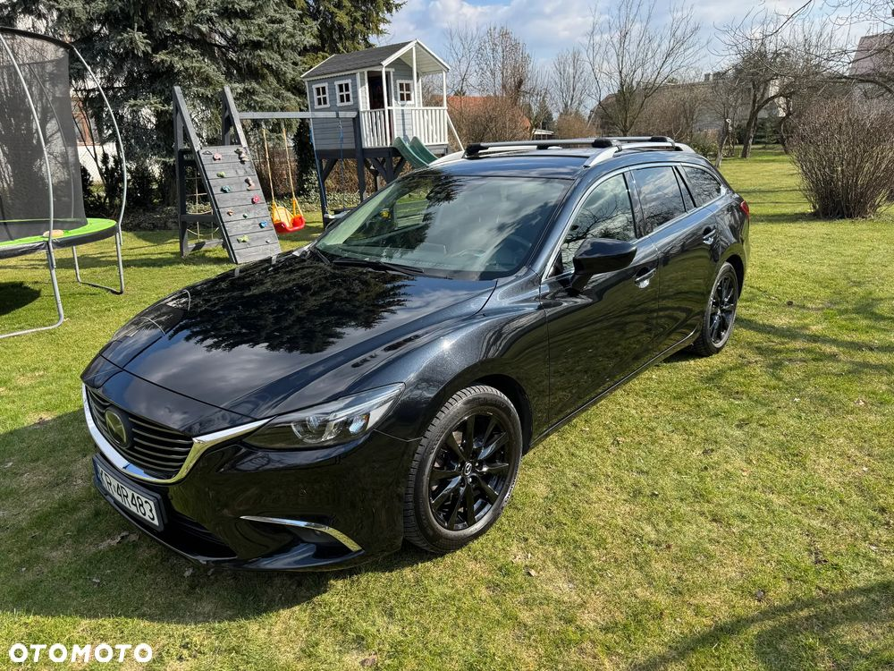
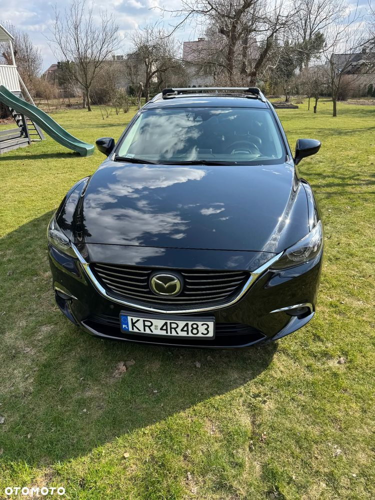
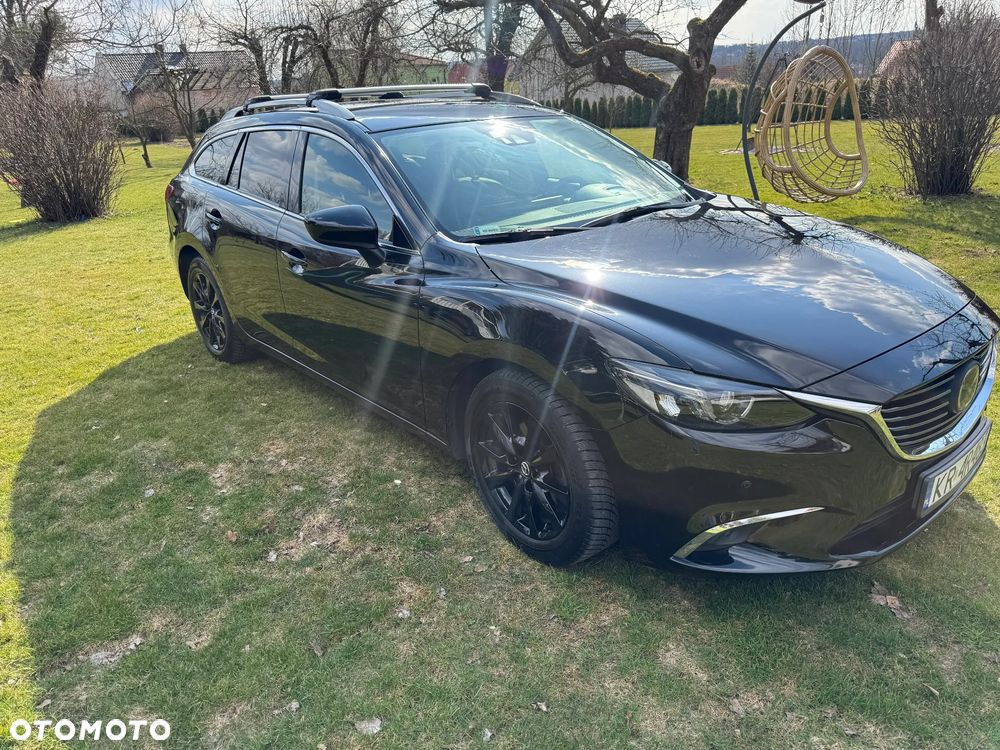
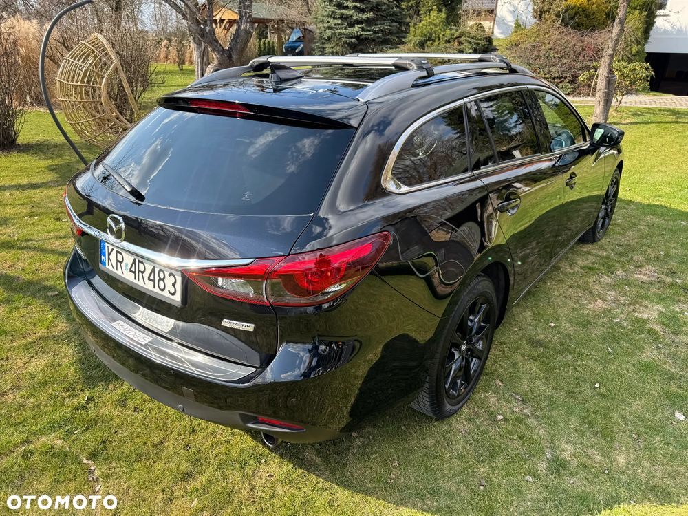
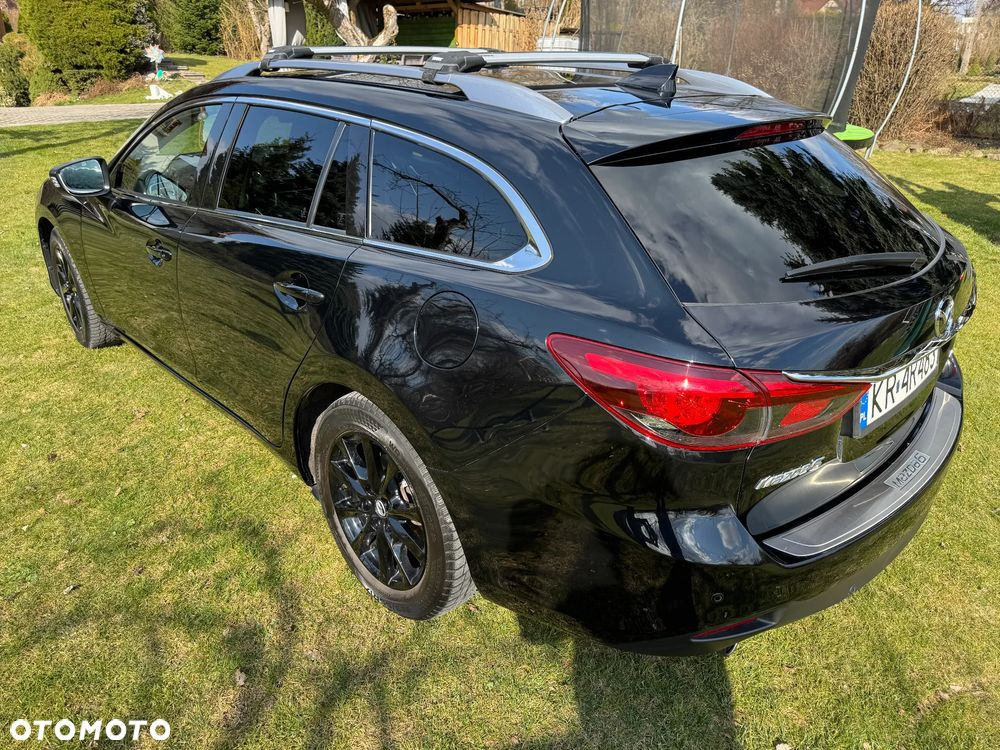
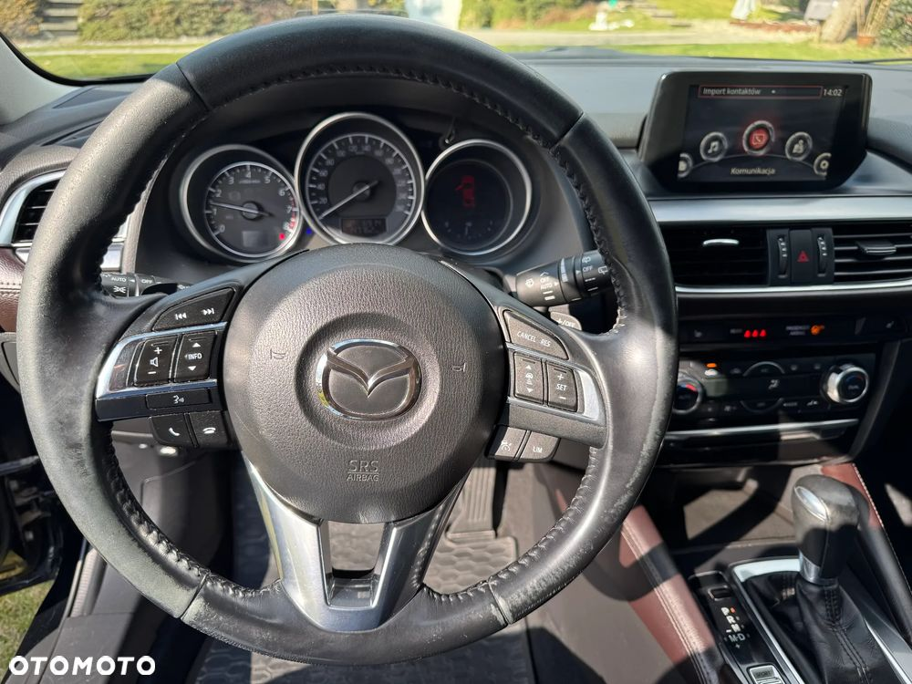
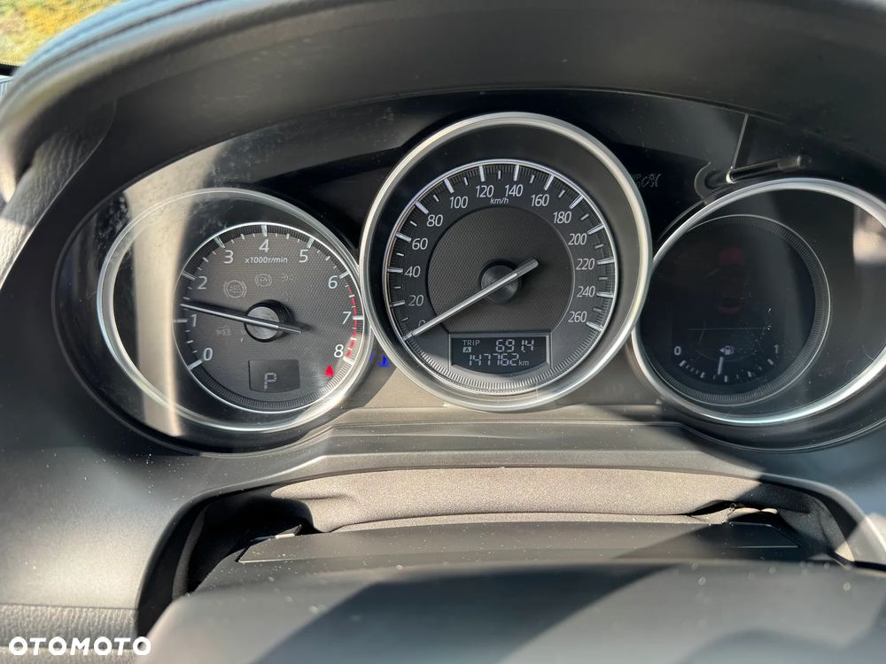
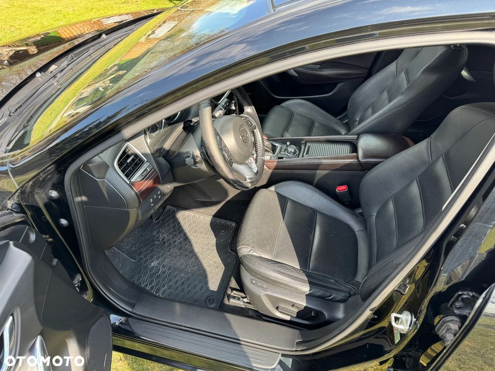
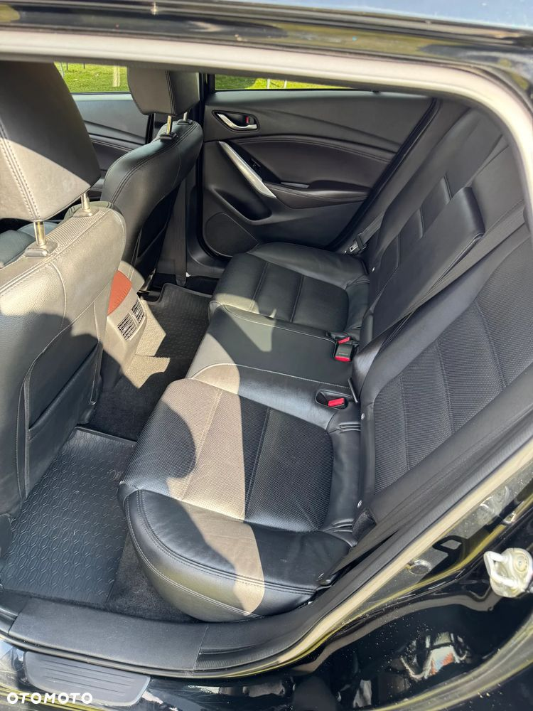
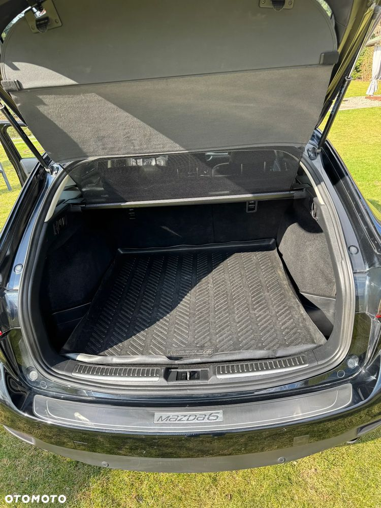
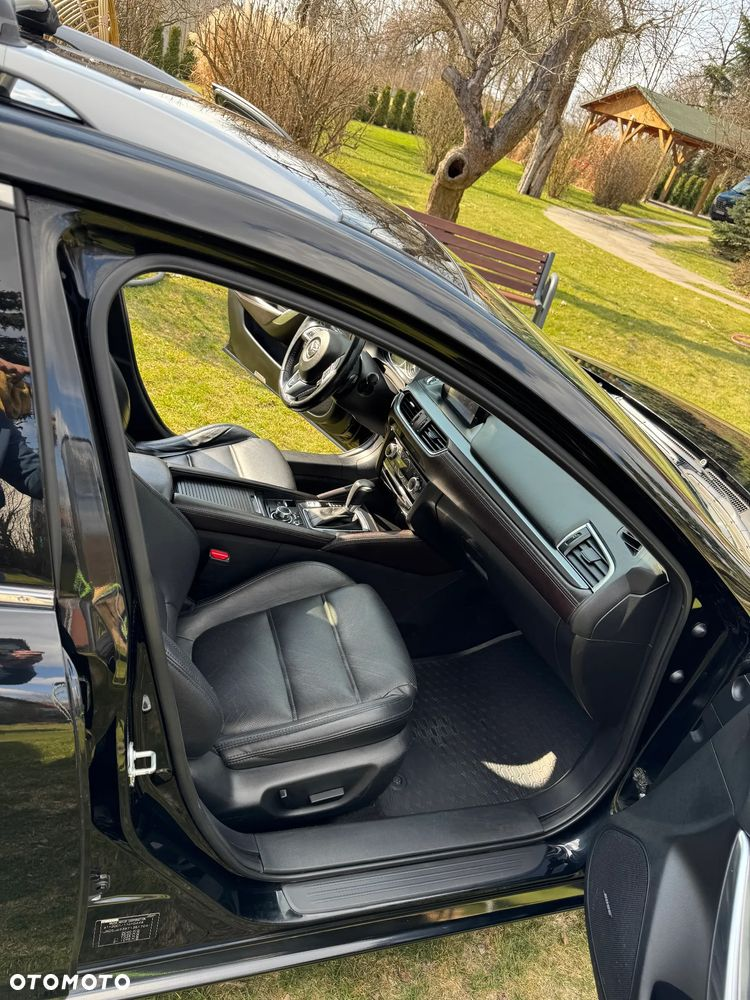
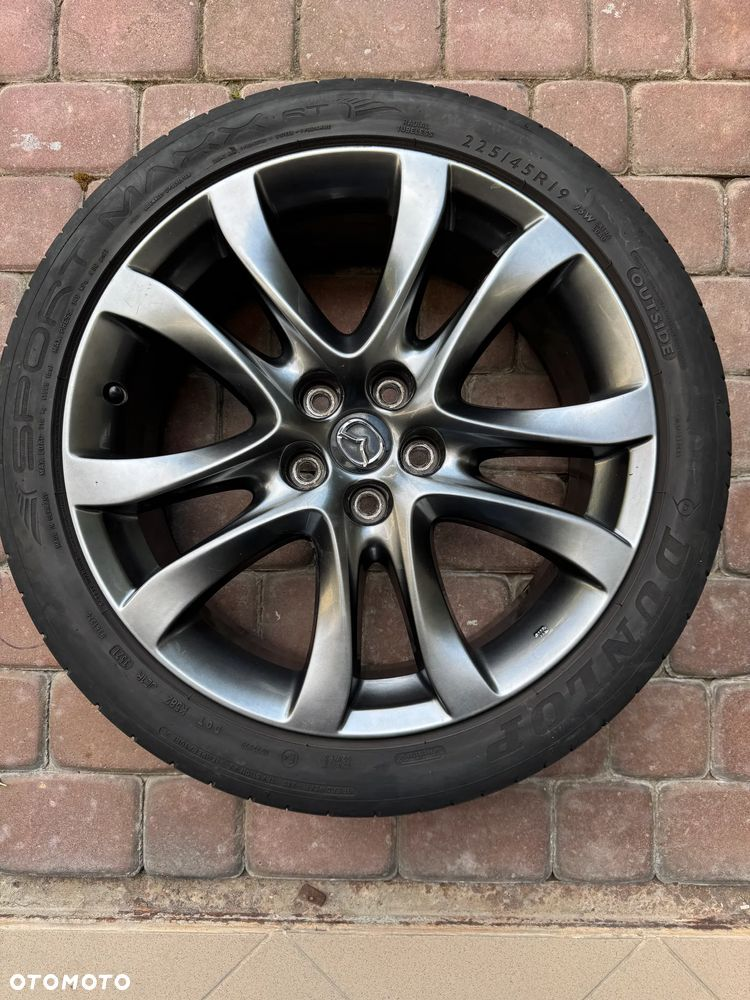